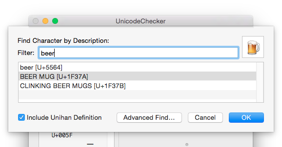
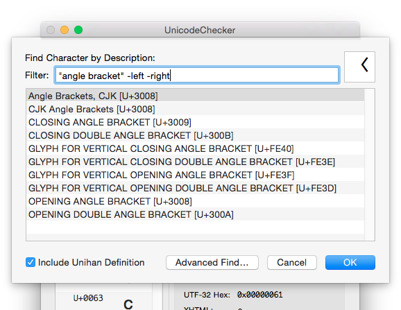

Finding Codepoints
UnicodeChecker offers two find panels for searching codepoints. Use the simple find panel for quickly searching codepoints by name. The advanced find window enables a more fine grained search by allowing to specify search criteria for individual Unicode properties.
Simple Find
The simple find panel allows you to quickly search for specific codepoints by their name or Unihan description (if the Unihan file is installed).
You can access the simple find panel from the “Find Character…” command in the “Edit” menu or by clicking on the magnifying glass at the right side of UnicodeChecker’s main window.

The simple find panel performs the search using the following rules:
- Words separated with spaces must all occur in no specific order in the character name (AND search).
- Words enclosed in double quotes (") must occur exactly as entered.
- Words prefixed with a minus (-) must not occur in the character name.

Advanced Find
Using the advanced find window you can search all codepoints by specifying detailed criteria on individual Unicode properties, such as Block, Script, General Category, Age, Unihan properties, etc.
You can access the advanced find panel from the “Advanced Find…” command in the “Edit” menu or by holding down the Option (⎇) key and clicking on the magnifying glass at the right side of UnicodeChecker’s main window.

When searching in text based properties using the advanced find panel, your query method can be one of “contains”, “begins with”, “ends width”, “Edit”, “is like”, and “matches”. The first three should be self-explanatory, the other two allow pattern based searches:
- “is like” allows simple wildcard patterns where a “?” matches any character and a “*” matches zero or more arbitrary characters.
- “matches” allows regular expression patterns.
In order to construct complex searches with boolean AND, OR, and NOT operations, hold down the Option (⎇) key when clicking on a “+” button.